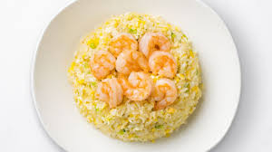

Fried Rice

Description
Fried rice is a versatile and flavorful dish that is enjoyed in various cuisines around the world. It is made by stir-frying cooked rice with a combination of vegetables, proteins, and seasonings, resulting in a satisfying and delicious meal. Fried rice can be customized with different ingredients based on personal preference, making it a popular choice for using up leftovers or creating quick and easy meals.
Ingredients
- Cooked rice (preferably leftover and chilled)
- 2 tablespoons vegetable oil
- 2 eggs, lightly beaten
- 1 onion, finely chopped
- 2 cloves garlic, minced
- 1 carrot, diced
- 1 cup frozen peas, thawed
- 2 green onions, chopped
- 3-4 tablespoons soy sauce
- Salt and pepper to taste
- Sesame oil for drizzling (optional)
Steps
- Cook Rice: Start by cooking the rice according to package instructions. It's best to use leftover rice that has been chilled as it fries up better.
- Prepare Ingredients: Chop all the vegetables and have them ready for quick stir-frying.
- Heat Oil: Heat vegetable oil in a large skillet or wok over medium-high heat.
- Scramble Eggs: Pour the beaten eggs into the hot skillet. Stir gently until they are scrambled but still slightly runny. Remove the eggs from the skillet and set aside.
- Sauté Aromatics: In the same skillet, add chopped onion and minced garlic. Sauté until fragrant and the onion is translucent, about 2 minutes.
- Add Vegetables: Add diced carrot and thawed peas to the skillet. Stir-fry for another 2-3 minutes until the vegetables are tender-crisp.
- Add Rice: Add the cooked rice to the skillet, breaking up any clumps with a spatula. Stir-fry the rice with the vegetables until heated through.
- Season: Drizzle soy sauce over the rice. Add salt and pepper to taste. Stir well to combine.
- Finish: Return the scrambled eggs to the skillet. Stir-fry everything together until evenly distributed and heated through.
- Serve: Transfer the fried rice to serving plates. Garnish with chopped green onions and drizzle with sesame oil for extra flavor if desired. Serve hot and enjoy!